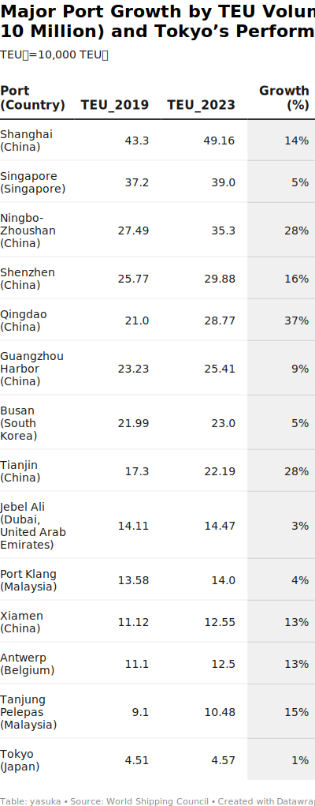

<!DOCTYPE html>
<html>
<head>
    <meta charset="utf-8" />
    <title>Mapbox Storytelling</title>
    <meta name="viewport" content="initial-scale=1,maximum-scale=1,user-scalable=no" />
    <link rel="icon" type="image/x-icon"
        href="https://raw.githubusercontent.com/mapbox/assembly/publisher-staging/src/svgs/mapbox.svg">
    <script src="https://api.tiles.mapbox.com/mapbox-gl-js/v3.8.0/mapbox-gl.js"></script>
    <link href="https://api.tiles.mapbox.com/mapbox-gl-js/v3.8.0/mapbox-gl.css" rel="stylesheet" />
    <script src="https://cdn.jsdelivr.net/npm/mapbox-gl-globe-minimap@1.2.0/dist/bundle.js"></script>
    <script src="https://unpkg.com/scrollama"></script>
    <style>
        /* 基本フォント設定 */
        body {
          margin: 0; 
          padding: 0; 
          font-family: Georgia, serif;
          font-size: 1.06em;
          line-height: 1.6;
          color: #222;
          background-color: #fff;
        }
        a, a:hover, a:visited { color: #0071bc; }

        /* その他CSS */
        #map { top: 0; height: 100vh; width: 100vw; position: fixed; }
        #header { margin: auto; width: 100%; position: relative; z-index: 5; }
        #header h1, #header h2, #header p { margin: 0; padding: 2vh 2vw; text-align: center; }
        #footer { width: 100%; min-height: 5vh; padding: 2vh 0; text-align: center; font-size: 13px; position: relative; z-index: 5; }
        #features { padding: 10vh 0; }
        .hidden { visibility: hidden; }
        .centered { width: 50vw; margin: 0 auto; }
        .lefty { width: 33vw; margin-left: 5vw; }
        .righty { width: 33vw; margin-left: 62vw; }
        .fully { width: 100%; margin: auto; }
        .light { color: #696868; background-color: #454343; }
        .dark  { color: #6a6868; background-color: #fcfcfc; }
        .wide-box { max-width: 90% !important; }
        .step { padding-bottom: 50vh; opacity: 0.25; }
        .step.active { opacity: 0.9; }
        .step div { padding: 25px 50px; line-height: 25px; font-size: 13px; max-width: 600px; }
        .step#02-id > div { max-width: 90% !important; }
        .step img { width: 100%; }

        /* タイトルの太字とサイズ調整 */
        h1, h2, h3 {
          font-weight: bold;
          font-family: Georgia, serif;
          color: #111;
          line-height: 1.2;
        }
        h1 {
          font-size: 2.2em;
          margin-bottom: 0.3em;
        }
        h2 {
          font-size: 1.8em;
          margin-bottom: 0.3em;
        }
        h3 {
          font-size: 1.4em;
          margin-bottom: 0.5em;
        }

        /* last05用 */
        #last05 {
          width: 100%;
          background: #fcfcfc;
          min-height: 30vh;
          margin: 4em 0 2em 0;
          box-sizing: border-box;
          position: relative;
          z-index: 10;
          color: #222;
        }
        #last05 .last05-content {
          display: flex !important;
          flex-direction: row !important;
          align-items: flex-start !important;
          justify-content: center !important;
          gap: 2em;
          max-width: 1100px;
          margin: 0 auto;
          background: #fcfcfc;
          box-shadow: none;
          padding: 2.5em 2em;
        }
        #last05 .last05-text {
          flex: 1 1 0%;
          min-width: 220px;
          font-family: Georgia, serif;
          font-size: 1.06em;
          line-height: 1.85;
          text-align: left;
          color: #222;
        }
        #last05 .last05-image {
          display: flex;
          align-items: flex-start;
        }
        #last05 .last05-image img {
          display: block;
          width: 100%;
          max-width: 340px;
          min-width: 120px;
        }
        #last05 .last05-text h3 { text-align: left; margin-top: 0; margin-bottom: 1em; font-weight: bold; }
        #last05 .last05-text p { margin-bottom: 0; }
        @media (max-width:900px){
          #last05 .last05-content{flex-direction:column !important;padding:1.5em 0.7em;gap:1.2em;}
          #last05 .last05-image img{max-width:90vw;}
        }
    </style>
</head>
<body>
    <div id="map"></div>
    <div id="story"></div>
    <script src="./config.js"></script>
    <script>
        var layerTypes = {
            'fill': ['fill-opacity'], 'line': ['line-opacity'], 'circle': ['circle-opacity','circle-stroke-opacity'],
            'symbol': ['icon-opacity','text-opacity'], 'raster': ['raster-opacity'],
            'fill-extrusion': ['fill-extrusion-opacity'], 'heatmap': ['heatmap-opacity']
        };
        var alignments = { left:'lefty', center:'centered', right:'righty', full:'fully' };
        function getLayerPaintType(layer) {
            return layerTypes[ map.getLayer(layer).type ];
        }
        function setLayerOpacity(layer) {
            getLayerPaintType(layer.layer).forEach(prop=>{
                var opts = {}, trans = layer.duration && {[prop+'-transition']: {duration: layer.duration}};
                if(layer.duration) map.setPaintProperty(layer.layer, prop+'-transition', trans);
                map.setPaintProperty(layer.layer, prop, layer.opacity, opts);
            });
        }

        var story = document.getElementById('story');
        var features = document.createElement('div'); features.id = 'features';
        var header = document.createElement('div');
        if(config.title){ header.appendChild(Object.assign(document.createElement('h1'),{innerText:config.title})); }
        if(config.subtitle){ header.appendChild(Object.assign(document.createElement('h2'),{innerText:config.subtitle})); }
        if(config.byline){ header.appendChild(Object.assign(document.createElement('p'),{innerText:config.byline})); }
        if(header.innerText) { header.classList.add(config.theme); header.id='header'; story.appendChild(header); }

        config.chapters.forEach((record, idx) => {
            const container = document.createElement('div');
            const chapter   = document.createElement('div');
            chapter.classList.add(config.theme);
            if (record.id === '02-id') chapter.classList.add('wide-box');
            if (record.title) {
                const h3 = document.createElement('h3');
                h3.innerText = record.title;
                chapter.appendChild(h3);
            }
            if (record.id === '03-id') {
                const embedDiv = document.createElement('div');
                embedDiv.classList.add('flourish-embed', 'flourish-map');
                embedDiv.setAttribute('data-src', 'visualisation/24379738');
                chapter.appendChild(embedDiv);
                const s = document.createElement('script');
                s.src   = 'https://public.flourish.studio/resources/embed.js';
                s.async = true;
                chapter.appendChild(s);
                const ns = document.createElement('noscript');
                ns.innerHTML = ``;
                chapter.appendChild(ns);
                if (record.description) {
                    const p = document.createElement('p');
                    p.innerHTML = record.description;
                    chapter.appendChild(p);
                }
            } else {
                if (record.image) {
                    const img = new Image();
                    img.src = record.image;
                    chapter.appendChild(img);
                }
                if (record.description) {
                    const p = document.createElement('p');
                    p.innerHTML = record.description;
                    chapter.appendChild(p);
                }
            }
            container.id = record.id;
            container.classList.add('step');
            if (idx === 0) container.classList.add('active');
            container.classList.add(alignments[record.alignment] || 'centered');
            if (record.id === '02-id') {
                container.classList.remove(alignments[record.alignment]);
                container.style.width  = '50vw';
                container.style.margin = '0 20px 0 auto';
            }
            if (record.hidden) container.classList.add('hidden');
            container.appendChild(chapter);
            features.appendChild(container);
        });

        story.appendChild(features);

        // last05エリア
        var last05 = document.createElement('div');
        last05.id = 'last05';
        last05.innerHTML = `
          <div class="last05-content">
            <div class="last05-text">
              <h3>As the World Moves Ahead, Japan Needs a Port Strategy Now</h3>
              <p>
                Let’s return to the numbers—specifically, container volume and growth. The chart below ranks ports handling over 10 million TEUs annually and compares their growth from 2019 to 2023.

Busan, for instance, grew 13.5% in that period, reaching roughly 23.1 million TEUs in 2023. Ningbo saw a 14.6% increase, handling over 35.2 million TEUs. Meanwhile, Japan’s leading ports—Tokyo, Yokohama, and Kobe combined—grew less than 5%, with volumes plateauing around 23 million TEUs.

These are not just statistics. Ports are economies of scale. The more TEUs processed, the lower the per-container cost—and the greater the options for shipping lines. A port’s scale drives competitiveness and resilience. In times of crisis, a strong hub port ensures the flow of goods and, by extension, national stability.

With rising uncertainty—tariffs, conflicts, pandemics—it’s time to reframe ports not as passive infrastructure but as pillars of national strategy.

*Data source: TEU growth rates compiled from World Shipping Council and Japan Port and Harbor Association reports, visualized via Datawrapper.*    
              </p>
            </div>
            <div class="last05-image">
              
            </div>
          </div>
        `;
        story.appendChild(last05);

        // フッター
        var footer = document.createElement('div');
        if(config.footer){
            var fp = document.createElement('p');
            fp.innerHTML = config.footer;
            footer.appendChild(fp);
        }
        if(footer.innerText){
            footer.classList.add(config.theme);
            footer.id = 'footer';
            story.appendChild(footer);
        }

        // Mapbox 初期化
        mapboxgl.accessToken = config.accessToken;
        window.map = new mapboxgl.Map({
            container: 'map',
            style: config.style,
            center: config.chapters[0].location.center,
            zoom:   config.chapters[0].location.zoom,
            bearing:config.chapters[0].location.bearing,
            pitch:  config.chapters[0].location.pitch,
            interactive: false,
            projection: config.projection
        });
        if(config.inset){
            map.addControl(new GlobeMinimap({...config.insetOptions}), config.insetPosition);
        }
        if(config.showMarkers){
            new mapboxgl.Marker({color: config.markerColor})
                .setLngLat(config.chapters[0].location.center)
                .addTo(map);
        }

        // Mapbox回転制御関数
        window.rotateInterval = null;
        function startRotation(){
            map.easeTo({pitch:60, duration:500});
            window.rotateInterval = setInterval(()=>{
                var b = map.getBearing();
                map.easeTo({bearing: b + 0.1, duration:50, easing:t=>t});
            },50);
        }
        function stopRotation(){
            clearInterval(window.rotateInterval);
            window.rotateInterval = null;
        }
        window.startRotation = startRotation;
        window.stopRotation  = stopRotation;

        // Scrollama と 回転制御
        map.on('load', function(){
            if(config.use3dTerrain){
                map.addSource('mapbox-dem',{type:'raster-dem',url:'mapbox://mapbox.mapbox-terrain-dem-v1',tileSize:512,maxzoom:14});
                map.setTerrain({source:'mapbox-dem',exaggeration:1.5});
                map.addLayer({id:'sky',type:'sky',paint:{'sky-type':'atmosphere','sky-atmosphere-sun':[0,0],'sky-atmosphere-sun-intensity':15}});
            }
            startRotation();
            const scroller = scrollama();
            scroller.setup({step:'.step', offset:0.5, progress:true})
                .onStepEnter(response => {
                    stopRotation();
                    var chap = config.chapters.find(c=>c.id===response.element.id);
                    response.element.classList.add('active');
                    if (chap.id === '04-id') {
                        map.setStyle('mapbox://styles/mapbox/satellite-v9');
                    } else {
                        map.setStyle(config.style);
                    }
                    map[ chap.mapAnimation||'flyTo' ]( chap.location );
                    if(chap.rotateAnimation || chap.callback==='startRotation'){
                        startRotation();
                    }
                })
                .onStepExit(response => {
                    stopRotation();
                    response.element.classList.remove('active');
                });

            if(config.auto){
                document.querySelectorAll('[data-scrollama-index="0"]')[0].scrollIntoView();
            }
        });
    </script>
    <script src="https://public.flourish.studio/resources/embed.js" async defer></script>
</body>
</html>
